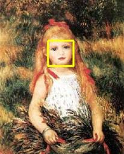
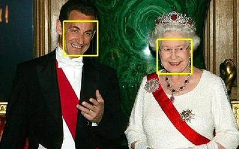
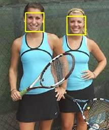

|
|

ENS/INRIA Visual Recognition and Machine Learning
Summer School 2013 Simple Face Detector: Practical session
To Download: cvml2013-practical-face-detection.zip
Goal
The goal of this session is to get basic practical experience with SVM classification as well as with the visual object category detection in still images. We will consider a simple face detector based on the common “scanning-window” technique. Our implementation of the detector will contain the following steps:
Getting started
Before the start, download the code and images from cvml2013-practical-face-detection.zip UnZip the archive, start Matlab in the directory cvml2013-practical-face-detection/matlab
Exercise description
Open and edit the script exercise.m in Matlab editor. The script contains commented code and description for all steps of this exercise. You will need to fill in some parts of this script with your own code. The steps of the exercise requiring your code modification are marked in red below.
3.1 Try different threshold values to pre-select windows passed to the NMS step by modifying
parameter confthresh.
3.2 Try different threshold values for NMS detections by modifying confthreshnms
3.3 Try detection with the different thresholds for images: img1.jpg, img2.jpg, img3.jpg,
img4.jpg. Can you find unique NMS threshold giving perfect face detection in all images?
Linear SVM classifier is efficient for analyzing many image sub-windows but has lower accuracy compared to RBF SVM. Non-linear SVM, however, is often too slow to be applied in a window-scanning fashion. To improve detection results and to limit the execution time, one can apply non-linear SVM classification only to samples which have passed the linear SVM. Train non-linear SVM using faster implementations of SVM (e.g. LIBSVM or SVM-Light) and apply it to face detections returned by the linear classifier. Compare detection results of the linear and RBF SVM visually for different images.
2013, Ivan Laptev <Ivan.Laptev@ens.fr>, Josef Sivic <Josef.Sivic@ens.fr>
|
|